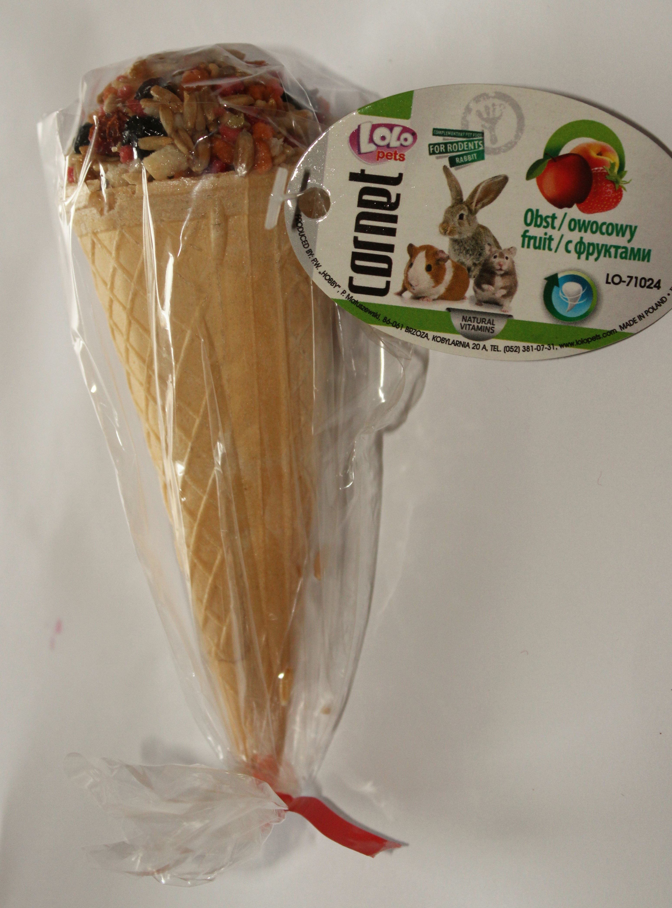

My career as a football pundit didn't get off to a great start.
04-Aug-2017 | Milku
But the result was the right one.

My career as Mystic Milku got off to a poor start. I hold my paws up. I got it wrong. I thought Ružomberok would be victorious, but, instead, Everton claimed another well-deserved goal to progress to the next round with a 2-0 aggregate score. My humans were happy so it'll be Everton forever for me now.
So, yesterday was a good day for Everton...and for me. All of my humans were back home and my usual routine was reinstated. Getting my snacks at 2:30 am from the big fella is pretty poor...I suppose I'm lucky to have got them at all...but I do like to start my night's activity with a tasty morsel or three.
My travelling humans had lots of fun. They really enjoyed the Harry Potter Studio Tour. Now, they've sorted themselves into Hogwarts Houses. We have a Slytherin and a Hufflepuff. And my favourite little human is a Gryffindor. No question about it. They wouldn't have been queuing up for passes to go into Hogsmeade though. They didn't like butterbeer. Not even the ice cream. Their Mum will have a tail like mine if she keeps on treating herself to all the leftovers.
At least they had plenty of exercise the next day when the visited the Swadlincote Ski and Snowboard Centre. They weren't there to do any skiing or snowboarding though. They enjoyed a session of snotubing and tobogganing. Apparently it was hard work hauling the large inflatable rings back up the slope so they could slide down again - worth it though.
They also found time to visit the National Memorial Arboretum and Kenilworth Castle. But most importantly they made time to buy me a present...who would have thought that they could get a hamster treat shaped like an ice cream cone...no ice cream just lots of delicious seeds. I'm quite happy for them to leave me alone with the big fella now if they bring me nice rewards like that.
